Belleville, Michigan
Belleville Lake Dance Company
Belleville Lake Dance Company offers dance programming across styles including jazz, tap, ballet, hip-hop, ballroom, and acro. The studio is based at 500 E. Huron River Drive in Belleville.
- Location
- 500 E. Huron River Drive, Belleville, MI 48111
- Contact
- 734-787-0018